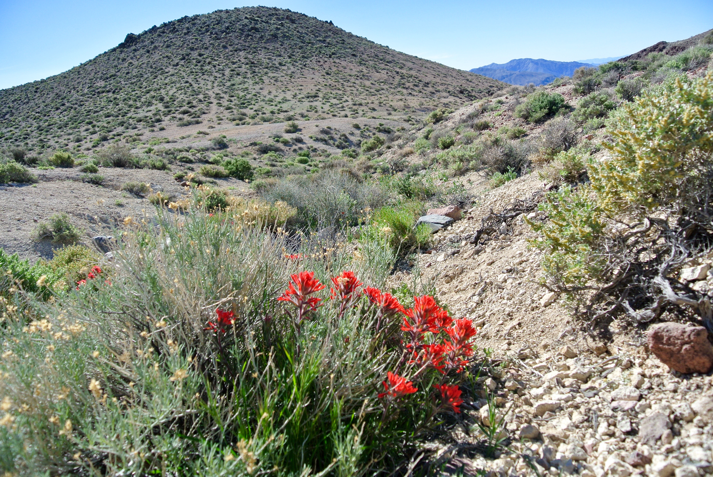

<div class="blurb">
	<h1>Current projects</h1>
  		<h2>Dissertation.</h2>
			<p>Desert and dryland mosses spend much of their time in a desiccated and inert state—a strategy that allows them to avoid some physiological stress when water is limited or absent.
However, these plants must still deal with consequences of their harsh environment upon rehydration and ‘waking up.’ To understand more about how dryland mosses cope with or limit damage from the environment while desiccated and dormant, I am investigating the mechanisms and evolutionary history of UV radiation protection in two Syntrichia species. </a></p>
		<h2>Dimensions.</h2>
			<p>Dimensions of Biodiversity project.</a></p>
</div><!-- /.blurb -->

<body>
	 
</body>
